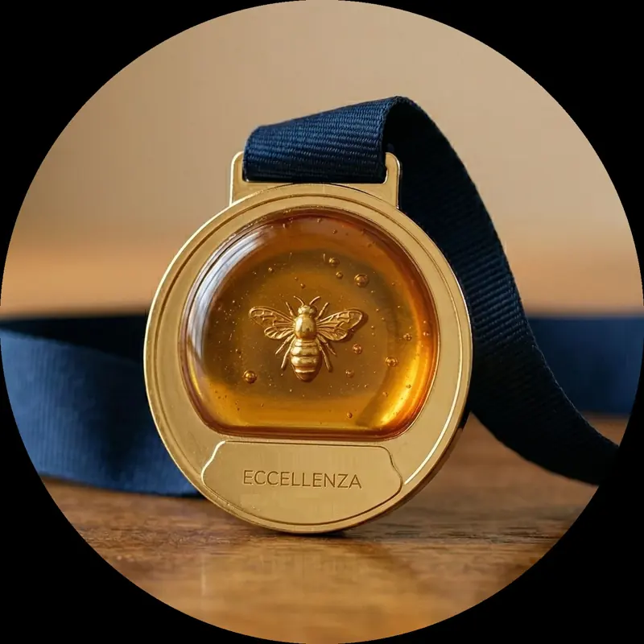

Premio Eccellenze di Casa Nostra · 2023
"L'eccellenza è il giusto riconoscimento a chi fiducioso opera nel proprio settore con abnegazione ed entusiasmo, superando quotidianamente gli ostacoli e guardando al futuro con ottimismo."
Chi siamo
"La mia passione per le api ed il miele nasce in famiglia: è stato mio padre ad insegnarmi a conoscere questi animali ed a scoprire il loro mondo."Gabriele Di Giuseppe, apicoltore


Una singola ape ha dietro di sé una moltitudine di sue simili, e ognuna ha il suo compito. Ogni giorno ognuna torna "a casa" dopo aver lavorato, proprio come noi, proprio come in una famiglia.
Mi ricordo quando per la prima volta ho visto un alveare e la paura che ho provato! Ma nello stesso momento ho osservato la naturalezza con cui mio padre si avvicinava e la cura che aveva in ogni gesto, e ho pensato che avrei voluto anch'io sperimentare quella padronanza, mista a profondo rispetto verso un'opera così grande realizzata da creature così piccole.
Così tutto è iniziato: dal timore alla scoperta, dall'osservazione alla messa in pratica, dall'ammirazione alla riconoscenza e alla passione.
Oggi l'azienda apistica Di. Di. P ha sede a Notaresco, in provincia di Teramo. Seguo personalmente ogni fase: la cura delle famiglie, gli spostamenti in base alle fioriture, la smielatura e il confezionamento.
Gabriele

"L'eccellenza è il giusto riconoscimento a chi fiducioso opera nel proprio settore con abnegazione ed entusiasmo, superando quotidianamente gli ostacoli e guardando al futuro con ottimismo."


Due medaglie d'oro: una per il miele di acacia e una per il miele uniflorale, consegnate all'Istituto Agrario Di Poppa-Rozzi davanti a studenti e apicoltori. Leggi l'articolo
"Ottimo miele. Alta qualità! Persona seria e disponibile. Consigliatissimo."
"Miele di ottima qualità. Titolare molto gentile e disponibile."
Hai assaggiato i nostri prodotti? Una recensione aiuta chi cerca miele genuino a fidarsi. Grazie.